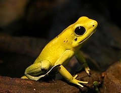

| Encuesta sobre la rana del monte | |||
|---|---|---|---|
| Contesta las siguientes preguntas de opcion multiple | |||
| Escribe tu nombre completo: | |||
| 1;¿Cuanto mide la rana del monte ? | |||
| 2;¿En que distrubicion geografica habita la rana del monte? | |||
| a; Brasil | b; Chile | c. Panama | d; Cuba |
| 3;¿Por que la rana del monte se encuentra en peligro de extincion ? | |||
| a:Caza | b:Deforestacion | c:Por depredadores | d:Por ser venenosas |
| 4; ¿De que se alimentan las ranas del monte ? | |||
| 5; ¿Cual de las siguientes imagenes es la rana del monte? | |||
| a.  | b. |
c. |
d. |
| Anota un dato curioso sobre la rana del monte : | |||